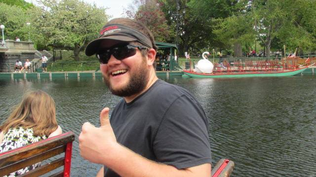
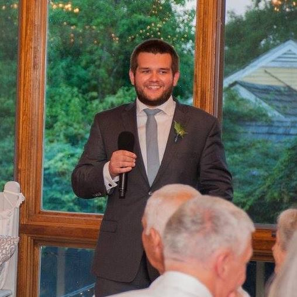

First, thanks for stopping in! This is worthy of a thumbs up itself.
I am a Software Developer based out of northern New England. I attended the University of New Hampshire where I obtained my BS in Computer Science. Since then, I've been a Software Developer at a variety of large companies.
By profession, I primaryily develop for the web. I originally focused on front-end work (data/state management, componentization, backends-for-frontends). More recently, I've begun learning and focusing on the back-end (API development, databases, infrastructure, etc.)
In my own time, I enjoy learning new programming languages and about them in general. My current language of interest is F#. I also have switched from Emacs to Visual Studio code, though Linux as my OS of choice.
Besides computer stuffs, I also enjoy road biking, jogging/walking, weightlifting, and (snow) skiing. And of course, trying to find ways to entertain the world!
This is a site I use to collect notes, thoughts, and projects for myself. I aim to try and keep it updated every month, but often fail. Feel free to check back in anyway!